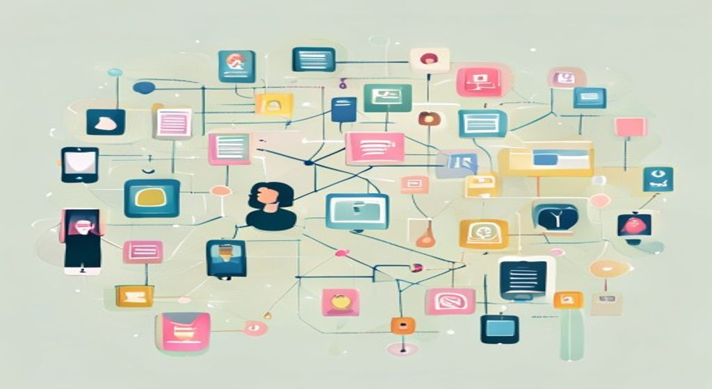

Redes sociales, influencers, web corporativa, dark sites, newsletters, monitorización de reputación online y crisis digitales. Cómo se hacen RRPP hoy, en internet.

Las herramientas digitales son el nuevo campo de juego de las Relaciones Públicas.
Las RRPP digitales (ePR) son la misma disciplina de siempre aplicada a internet: misma lógica, nuevos canales, mucha más velocidad y todo medible en tiempo real.
🧠 Los conceptos
Despliega cada tarjeta, léela con calma y márcala como entendida. La barra de arriba irá subiendo.
ePR (Electronic PR / Digital PR) = aplicar las técnicas de RRPP al entorno digital: webs, blogs, redes sociales, influencers, podcasts. No es un departamento nuevo: es la misma disciplina con canales nuevos.
¿Qué cambia respecto a las RRPP tradicionales?
| Lo que cambia | ¿En qué se nota? |
|---|---|
| Velocidad | El ciclo de noticia ya no es 24 h, sino minutos |
| Bidireccionalidad real | Los públicos responden en público y al instante |
| Métricas inmediatas | Dashboards en tiempo real, todo medible |
| Pérdida de control | El mensaje muta vía retweets, memes y comentarios |
Cada plataforma tiene su personalidad y su rol en RRPP. Usar la red equivocada es como llevar un chiste a un velatorio: no encaja.
| Plataforma | Rol RRPP | Tipo de contenido |
|---|---|---|
| Reputación corporativa, B2B, relaciones institucionales | Notas oficiales, opinión de directivos | |
| X (Twitter) | Tiempo real, gestión de crisis, prensa | Anuncios breves, respuesta a periodistas |
| Marca emocional, cultura interna | Visual, behind the scenes, stories | |
| TikTok | Awareness joven, branded content | Vídeo corto, tendencias |
| YouTube | Vídeos corporativos, entrevistas | Largo, evergreen (dura en el tiempo) |
Un influencer es alguien con credibilidad en una comunidad que puede prescribir (recomendar) mensajes de la marca. Su ventaja: más credibilidad que un anuncio pagado. Se clasifican por tamaño de audiencia (tiers):
| Tier | Seguidores | Engagement | Uso típico |
|---|---|---|---|
| Nano | 1 K – 10 K | Muy alto (5–10 %) | Hiper-nicho, B2B local |
| Micro | 10 K – 100 K | Alto (2–5 %) | Lanzamientos, comunidad |
| Macro | 100 K – 1 M | Medio (1–2 %) | Awareness, marcas medianas |
| Mega / celeb | > 1 M | Bajo (<1 %) | Awareness masivo, prestige |
Reglas de oro que no puedes saltarte:
#ad, #publi o #colaboración. Lo exige Autocontrol + AEPD. Si no, es publicidad encubierta.La web es el hogar digital de la organización: el único canal que controlas al 100 % (en redes sociales, la plataforma puede cambiar sus algoritmos o cerrarse). Dentro debe haber una sala de prensa online para los periodistas.
¿Qué lleva la sala de prensa online?
Otros canales propios (owned media):
| Canal | Para qué sirve en RRPP |
|---|---|
| Blog corporativo | Thought leadership: posicionar a la empresa como experta |
| Newsletter | Comunicación directa a base de contactos opt-in (han dado permiso) |
| Podcast | Marca personal de directivos, conversaciones con expertos del sector |
Dark site = un sitio web pre-construido y oculto que se publica solo cuando estalla una crisis. Permite responder en minutos, sin improvisar ni perder tiempo diseñando una web bajo presión.
¿Por qué tener uno preparado?
¿Qué contiene?
| Sección | Contenido |
|---|---|
| Comunicado oficial | Actualizado en tiempo real con los hechos confirmados |
| Cronología | Qué pasó, cuándo y qué medidas se han tomado |
| Contacto para afectados | Teléfono, email o formulario específico |
| FAQ | Preguntas frecuentes anticipadas y respondidas |
| Recursos para prensa | Fotos, vídeos, declaraciones del portavoz |
«Lo que no se mide, no se puede mejorar.» Las herramientas de social listening escuchan todo lo que se dice de tu marca en internet y miden el sentimiento (positivo, neutro, negativo) en tiempo real.
| Herramienta | Para qué destaca |
|---|---|
| Brand24 | Económica, social listening sencillo |
| Mention | Web + RRSS, alertas en tiempo real |
| Talkwalker | Enterprise, análisis visual, IA avanzada |
| Meltwater | Media intelligence completa, enfocada a RRPP |
| Google Alerts | Básico y gratuito, para empezar |
KPIs digitales clave (lo que mides en RRPP):
Una crisis digital es diferente a una crisis tradicional. ¿Por qué? Porque tiene características propias que la hacen mucho más difícil de gestionar:
| Característica | ¿Qué significa en la práctica? |
|---|---|
| Velocidad viral | Un tweet puede arder en 30 minutos |
| 24/7 | No hay horario de oficina para responder |
| Trazabilidad eterna | Google recuerda. Los archivos web guardan el caso durante años |
| Multiformato | Texto, vídeo, memes, GIFs — todos cuentan y se propagan |
| Polarización | La audiencia se divide rápido: a favor o en contra, sin grises |
Protocolo básico de respuesta digital:
| Plazo | Acción |
|---|---|
| 0–1 h | Holding statement: mensaje breve que reconoce la situación mientras se investiga |
| 1–4 h | Comunicado oficial: hechos confirmados + postura de la empresa |
| 4–24 h | FAQs + portavocía única + actualización continua en canales propios |
| 24 h+ | Recuperación: medidas concretas + auditoría + relato del aprendizaje |
La reputación digital es la evaluación agregada que los públicos hacen de una organización a partir de la conversación y los contenidos que circulan en entornos digitales. Es un activo intangible ligado a la credibilidad, la legitimidad y la confianza.
¿Con qué señales se analiza?
El futuro de las RRPP digitales viene marcado por la convergencia de cuatro grandes tendencias. El profesional del futuro no será quien maneje más herramientas, sino quien sepa combinarlas con estrategia y ética.
| Tendencia | ¿Qué significa para RRPP? |
|---|---|
| IA y automatización | Análisis predictivo de públicos, segmentación automática de newsletters, ajuste de mensajes en tiempo real |
| Personalización | Mensajes adaptados a cada segmento; fin de la comunicación masiva genérica |
| Storytelling inmersivo | Realidad aumentada, vídeo 360°, experiencias "phygital" (físico + digital) para vivir la marca |
| Comunicación con propósito | Vincular la marca a valores reales: sostenibilidad, inclusión, ética |
El profesional del futuro necesita: competencias analíticas de datos, social listening, coordinación multicanal y curaduría ética de contenidos.
🃏 Flashcards
Toca cada tarjeta para girarla. Tapa la definición con la mano y comprueba si te la sabes.
✅ Test rápido
6 preguntas tipo examen. Elige una opción y te corrige al momento con la explicación.
⭐ Preguntas del final de la presentación
Estas son las 5 preguntas de Autoevaluación tal cual aparecen en la última diapositiva del Tema 5. Léelas, intenta responder de cabeza y luego despliega la respuesta.
Una empresa segmenta su base de contactos (clientes, prensa, inversores…) por criterios como intereses, etapa del funnel o territorio. Para cada segmento configura flujos automatizados: